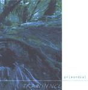

| Artist: | Transience |
| Title: | Primordial |
| Label: | Cyclops CYCL 133 |
| Length(s): | 61 minutes |
| Year(s) of release: | 2003 |
| Month of review: | [11/2003] |
| 1) | Heaven & Earth | 11.15 |
| 2) | Mind | 4.25 |
| 3) | Riding The Iron Rooster | 9.35 |
| 4) | A Stones Throw From Nowhere | 9.04 |
| 5) | Hollow Gardens | 3.00 |
| 6) | How Lucky They Are | 6.35 |
| 7) | Blurring The Margins | 4.27 |
| 8) | For Will Alone | 4.17 |
| 9) | Blurred Beyond Recognition | 9.09 |
Mind opens as quiet as its predecessor closed. Soft piano and gurgling keyboards. It stays quiet throughout being focused mainly on the vocals. Riding The Iron Rooster is a much catchier track, especially its bouncy opening. It shows that Land's End is in fact a bit different from Transience. If anything, Transience is broader in sound, more varied. This does not automatically make the music more likable. I for one, like Land's End as they are. This song is not as interesting as the opener, it is more ehm ordinary I think. I feel there is less of an atmosphere created, more like an extended pop song. It also includes some sax playing.
A Stones Throw From Nowhere is the next longish track (of which there four and this is the third). It opens well with samples and piano playing. Quietly unfolding, there is a peace and quiet speaking from the music now. Light drums, moody vibes and clear piano playing reign. Halfway, the music becomes more forceful, louder. Not for long though, since the second half contains mainly slow solo electric guitar.
Hollow Gardens is a short somber electronic, opening in the vein of the quiet side of Kitaro. Halfway the piano start with a typical Land's End melody. How Lucky They Are is a slow song oriented track, mainly acoustic with the main focus being the vocal line. Towards the end the song becomes a bit richer in sound, even somewhat orchestral.
Blurring The Margins is a rather sparse affair, dark and somber electronics, vocal whisperings. The atmosphere is well-sculpted. The vocals gain in power throughout the song. This is a good one. For Will Alone is another short one, lighter and clearer of tone. Acoustic guitar, twinkling keyboards make for a hazy and friendly atmosphere, but also a certain vagueness. Then the meandering keyboards set in, much louder and typically Land's End.
The closer is Blurred Beyond Recognition. A warm organ sound opens up, Light trumpet sounds ring out, the keyboards add a sacral feel. Then the drum computer sets in, and we can likely enough forget about the sacrality. Often, Transience seems a electronic vocal act more than a (progressive) rock band. Painting an atmosphere is what the band is about. Like its predecessor, the song is instrumental.